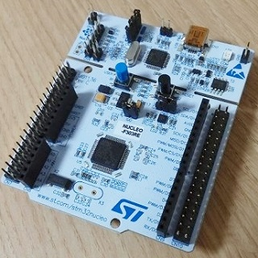

STM32 NucleoボードのLチカ
2018年11月19日 カテゴリー：STM32

将来的にデジタル信号処理を行うことを考えると、32ビットマイコンを使いこなすことが必要になってくると思います。今回STM32 Nucleoボードを購入したので、ボード上のLEDの点滅（Lチカ）までの手順をメモしておきます。
使用したNucleoボード：NUCLEO-F303RE（STM32F303RE搭載） ※miniBタイプのUSBケーブルが必要
＜開発環境＞
下記2つのソフトをインストールします。
・TrueSTUDIO for STM32 9.1.0
・STM32CubeMX 5.0.0 ※Java Runtime Environmentが必要
TrueSTUDIOはProバージョンが無料になったのが最近なので、SW4STM32というソフトの方が利用者が多いかもしれません。Mbedというブラウザで動くプログラミング環境もありますが、デバッグを考えると物足りなくなりそうなので採用しませんでした。
※現在は新しく出たSTM32CubeIDEというソフトを使っています。（2019年5月9日追記）
＜Lチカまでの手順＞
1) TrueSTUDIOを起動
2) ワークスペース指定ダイアログが出てくるので作業に使うフォルダを指定し、TrueSTUDIOを終了
※全角文字やスペースが入らないようにする
3) STM32CubeMXを起動
4) New ProjectのACCESS TO BOARD SELECTORボタンを押し、使用するボードを選択
※情報が自動更新される場合あり
5) Pinout & Configurationが表示されるがそのまま（LEDが繋がっているPA5ピンがGPIO_Outputに設定済）
6) Project ManagerのProjectを以下のように入力した後、右上のあたりGENERATE CODEボタンを押す
Project Name：プロジェクト名を入力
Project Location：2)で指定したTrueSTUDIOのワークスペースフォルダを選択
ToolChain / IDE：TrueSTUDIO
※ファームウェアをダウンロードするか聞かれたらYesを選択
7) コード生成終了後Open Projectを選択するとTrueSTUDIOが起動する
8) プロジェクト・エクスプローラー（左列）からSrcフォルダ内main.cを開く
9) 110行目あたり「/* USER CODE BEGIN 3 */」の下に以下の記述を追加する
HAL_GPIO_TogglePin(GPIOA, GPIO_PIN_5);
HAL_Delay(500);
11) Nucleoボードを接続
12) 実行→デバッグ（または虫と矢印のボタン） 画面が切り替わる
※ST-LINKを更新するよう指示が出る場合あり
13) 再開ボタンを押すとNucleoボードのLEDが点滅 終了ボタンで前の画面に戻る